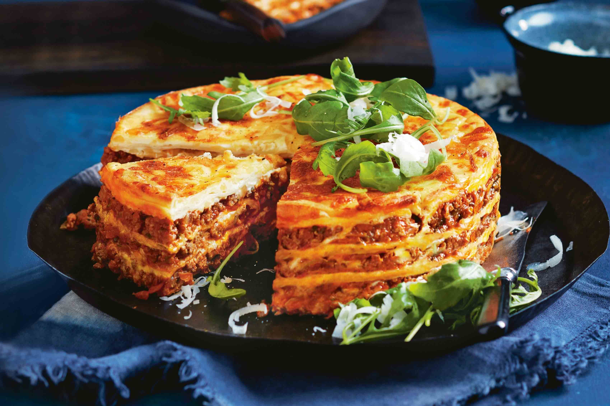

Lasagne

Description
With layer upon layer of rich tomatoey beef mince, pasta, and creamy cheesy sauce, it’s hard to find anything to dislike about lasagne. There are numerous reasons why this particular lasagne recipe has become so beloved. The addition of wine in the red sauce makes it super flavourful, while the layering of pasta with mozzarella makes for the perfect cheese pull. But if we were to pick one thing that makes this lasagne recipe stand out above all others, it’s the luscious bechamel sauce. A good home-made bechamel base takes time - but it’s worth it for the extra depth of flavour you won’t find with many lasagnes.
Ingredients
- 2 tsp olive oil
- 1 brown onion
- 2 cloves garlic, crushed
- 2 x 400g can tomatoes
- 125ml dry red wine
- 1/4cup tomato paste
- Salt and pepper
- 4 fresh lasagne sheets
- 55g mozzarella cheese
- Mixed salad leaves, to serve
Steps
- Heat oil in large frying pan over medium heat. Add onion and garlic and cook for five minutes. Add the mince and cook, break up any lumps until mince changes colour. Reduce heat and simmer for 30 minutes, stirring occaisionally.
- Male the cheese sauce.
- Preheat the oven to 180 degrees. Brush a rectangular ovenproof dish with oil. Add a quater of the cheese sauce. Arrange one lasagne sheet over the sauce. Top with one third of the mince mixture. Continue layering with lasagne sheets, mince and bechamel. Sprinkle with mozzarella. Bake for 40 minutes.